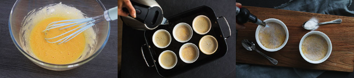

Bereidingswijze
Verwarm de oven op 150 graden. Klop de eidooiers met 75 gr suiker met de garde tot een egaal geel mengsel. Verwarm de slagroom net tegen het kookpunt in een pannetje. Voeg het kaneelstokje toe. Laat op laag vuur 10 minuutjes intrekken. Laat vervolgens een paar minuten afkoelen en verwijder het kaneelstokje. Schenk de warme room bij het eigeel en klop direct met een garde door elkaar en voeg voor extra kaneelsmaak nog een snufje kaneel toe.
Zet de schaaltjes in de ovenschaal. Vul de schaaltjes met het roommengsel. Vul de ruimte tussen de schaaltjes op met heet water. Laat ze vervolgens in het waterbad in 30 minuten gaar worden in de oven. Haal de bakjes vervolgens uit de oven, de crème mag nog iets wiebelen maar moet niet meer vloeibaar zijn. Laat ze afkoelen op kamertemperatuur en zet vervolgens minimaal 2 uur in de koelkast. Bestrooi vlak voor het serveren met de overige suiker en brand met een brander licht bruin. Laat het niet te donker worden anders wordt de smaak bitter.

Tip: Tijdens het branden is het handigst om met een klein vuurtje te beginnen en in een spiraalvormige beweging te flamberen totdat alle suikers gesmolten zijn.